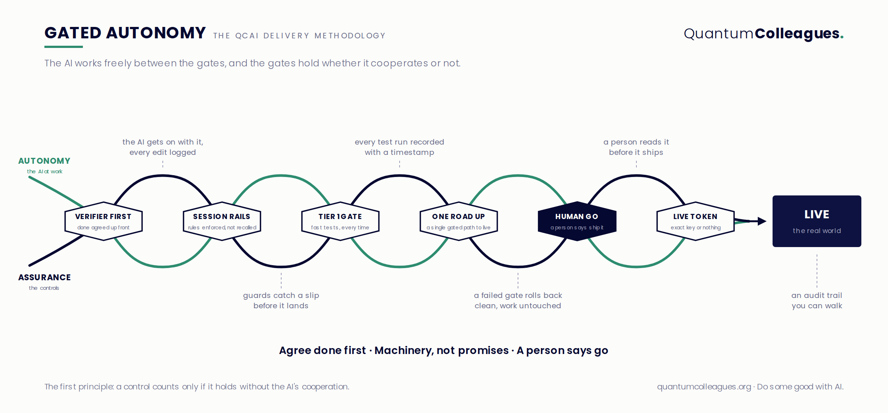

How do you deliver AI and AI-led automation safely for your business? The AI works freely. The gates hold whether it cooperates or not.
How can I deliver AI and AI-led automation safely for my business? The promise is obvious. So is the anxiety, and it is well founded. An AI that can draft your correspondence, run your diary and build your systems is an AI that can also send the wrong thing to the wrong person, or quietly break something you depend on.
We are QuantumColleagues™. We build AI admin agents: colleagues that take on the everyday load of email, diaries, briefings and follow ups. Three run in production today. One runs our own operation, one coordinates care for a regulated provider inside that client's own governance regime, and one is Admin Core, the product we offer to businesses like yours. An AI does a lot of our engineering heavy lifting too, so the safety question is not theoretical for us. We answer it every working day.
The obvious approach is to write the AI a rulebook and ask it to follow the rules. We tried that, and we learned the lesson quickly. A rule an AI promises to keep is a hope, not a control. The model forgets, or it drifts, or a long working session erodes its discipline, and none of that is malice. It is simply what happens when you rely on cooperation from a system that cannot guarantee its own consistency.
This sorts every safeguard into one of two piles. A hard control is enforced by machinery and holds on the AI's worst day. A procedural control is a convention: a rule in a document, a habit, a promise. Conventions are useful scaffolding, but they are not safety. The honest discipline is to classify what you have, admit which pile each control sits in, and convert the second pile into the first.
It is a fair question to ask of any AI in your business: if the AI ignored this safeguard, would it still hold?
Picture a double helix. One strand is autonomy: the AI picks up work and gets on with it unsupervised, at machine speed. The other strand is assurance, made of hard controls. The two cross at six gates, and each crossing is a point where the work cannot proceed on trust alone. Between the gates the agent is genuinely free, and that freedom is where the productivity comes from. The gates are what make it affordable.

Every piece of work starts with a check that can only pass or fail, written before anyone touches the code. Done is agreed up front, so the backlog grades itself and the AI needs no one looking over its shoulder. Autonomy is earned one verified item at a time.
The working rules are enforced by the environment the AI operates in, not recalled from its memory. The guards catch a slip before it lands.
A fast, deterministic test suite runs every single time and is never skipped, however small the change. Every run is logged with a timestamp and never overwritten.
There is exactly one gated path from development to production, and a failed check rolls everything back cleanly. The same checks run again on the server, so bypassing them locally achieves nothing.
Nothing ships until a person has read the change and said go. This is the gate we care about most, and it is deliberately boring: a human, a diff, a decision. Machine speed applies to the work, never to the judgement.
Anything that touches the real world, a live mailbox, a live calendar, a live client, requires an exact key the AI cannot supply for itself.
That is the whole method in twelve words, and it is a fair test to hold any AI supplier to, including us. Ask how done is agreed before work starts. Ask which of their controls hold without the AI's cooperation. Ask who says go, and what they read before they say it.
It buys a small firm the ability to operate a fleet of production AI agents safely, including one inside a regulated care setting. It buys an audit trail an assessor can walk: a changelog entry for every edit, timestamped test logs that are never overwritten, and a written handover at the end of every session so the next one, human or AI, picks the platform up cold.
Most of all it buys speed without the anxiety. The AI that does our engineering heavy lifting is the most productive engineer we have ever worked with, and we do not trust it at all. Those two statements sit together comfortably, because the method never asks us to choose between them.
The principles are free and you are welcome to them. The practice is the product.
The white paper sets out the first principle, the two strands and all six gates in plain English, with the full method on one page. It is free. Tell us where to send it.
Get the white paperGated Autonomy is the delivery method behind Admin Core, our AI admin agent for businesses. If you would like one working for you, come and talk to us.